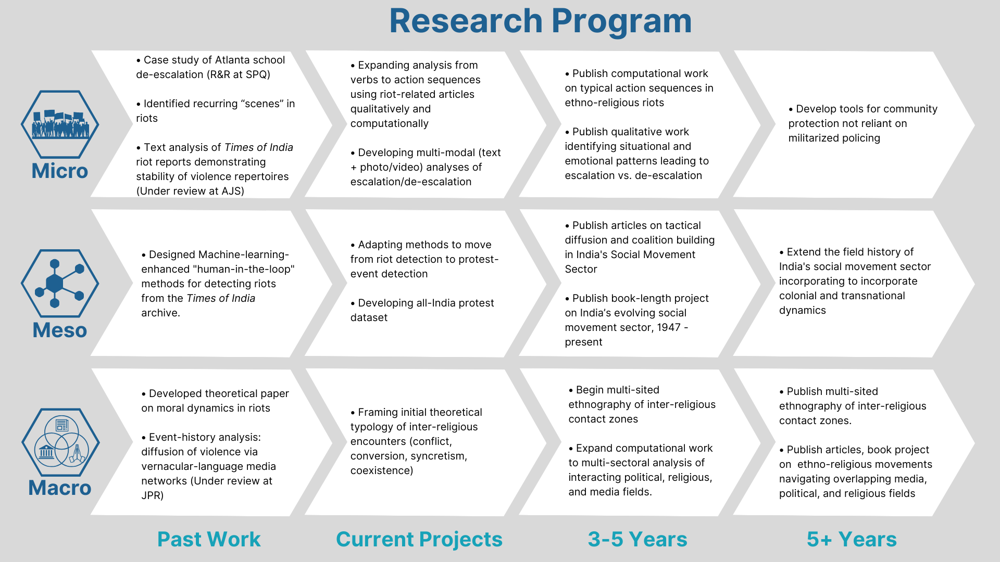

A brief statement of my research agenda is available here, and a more detailed version is available here
Ethno-Religious Violence, Social Movements, and Transformative Justice
Computational Analysis of Collective Violence Patterns
How Interaction Rituals Interrupt Violence
How Vernacular Media Drives Patterns of Unrest
Elite Networks and Social Dynamics
Micro-dynamics of Violence Prevention
Repertoires of Communal Violence
Spatial and Temporal Patterns of Violence Spread
Collective Effervescence and Violence
Elite Mobilization in Collective Violence
DANGA Lab Flagship Project
Comprehensive Data Infrastructure Development
Methodological Innovation in Violence Research
Computational Analysis of Pre-Violence Dynamics